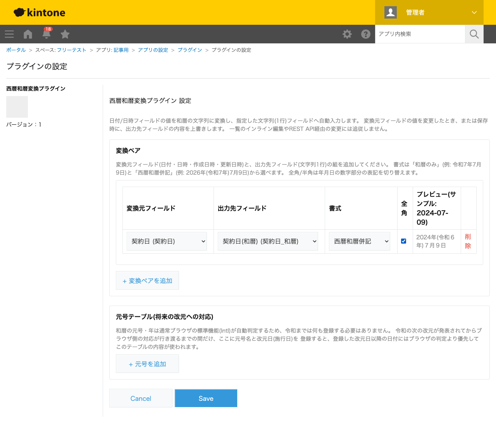
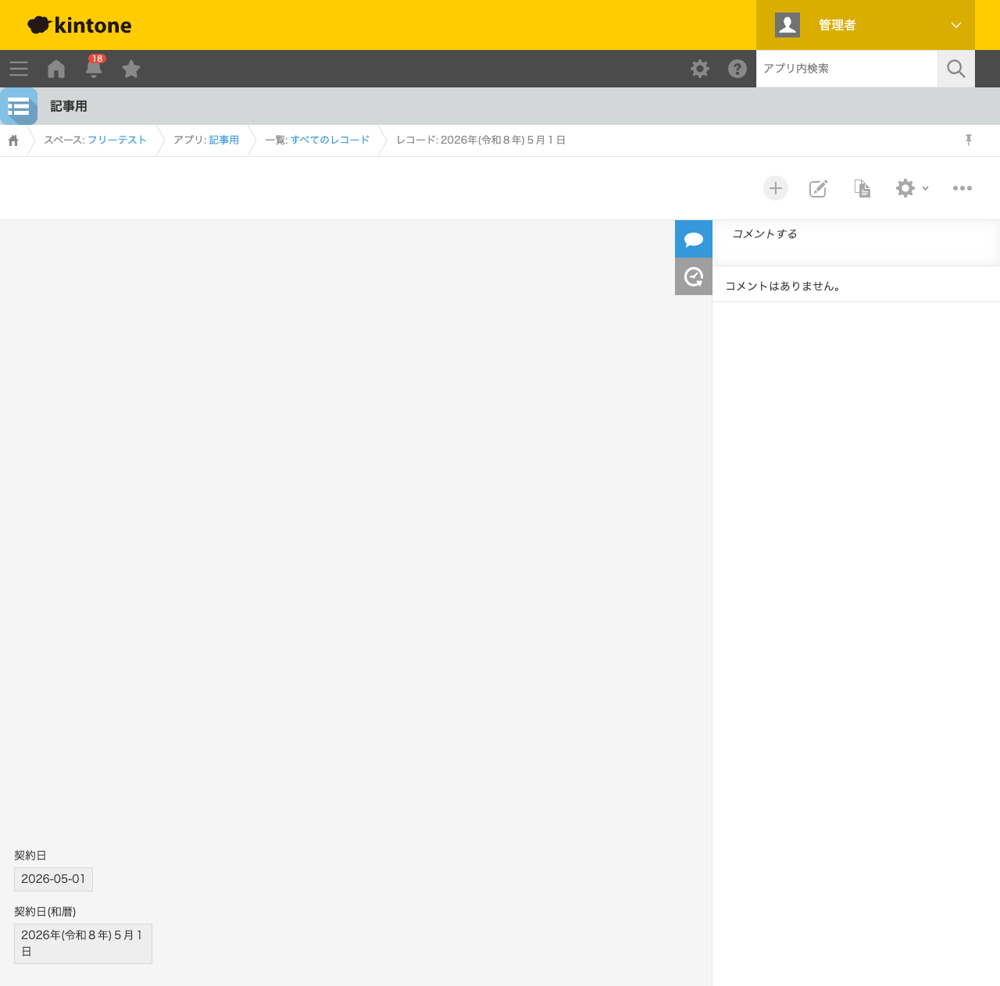

GovAppsプラグイン 安全性を確認できる無料kintoneプラグイン集
自治体や官公庁向けの帳票では、契約日や決裁日を「令和8年5月1日」のような和暦表記で出力したい
場面が多くあります。kintoneの日付フィールドは西暦(2026-05-01)でしか保持できないため、
和暦表記が必要な場合は別フィールドへの変換が必要です。この記事では、無料プラグインで日付を
自動的に和暦へ変換する方法を、実際の設定画面と変換結果つきで解説します。
kintoneの日付フィールドは西暦(グレゴリオ暦)でしか値を保持できず、標準機能に和暦表示への変換
機能はありません。計算(CALC)フィールドでも日付から元号・和暦年を算出することはできません。
JavaScriptカスタマイズを自作すれば、ブラウザのIntl.DateTimeFormatを使って和暦へ
変換できますが、元年表記(「令和元年」)・全角/半角の使い分け・将来の改元への対応まで含めると
簡単な作業ではありません。
「日付を和暦表記に変換する」機能を用意する方法は、大きく4つあります。それぞれの向き不向きを まとめました。
| 方法 | 向いている場合 | 注意点 |
|---|---|---|
| kintone標準機能のみ | 西暦表記のままで運用できる場合 | 和暦への変換機能自体が無い |
| JavaScriptを自作する | 社内に開発者がいて、独自の書式・改元対応が必要な場合 | 元年表記・全角半角切り替え・改元対応の実装・保守が必要 |
| 有料の他社プラグイン | 予算があり、手厚いサポートを求める場合 | 月額課金が発生する。ソースコードが非公開で、変換ロジックを利用者側で確認しにくいことが多い |
| GovAppsプラグイン(このプラグイン) | 無料で試したい、社内・庁内でセキュリティを確認してから導入したい場合 | 一覧のインライン編集・REST API経由の変更には追従しない |
GovAppsのプラグインはすべて無料・広告なしで、追加課金なしで使い続けられます。 ソースコードはGitHubで全公開しているオープンソースなので、 「本当に外部と通信していないか(ブラウザ標準の日時APIのみで完結しているか)」を自治体・企業の セキュリティ担当者自身の目で確認できます(このプラグインも個別ページにセキュリティレビュー結果を掲載しています)。
西暦和暦変換プラグインは、変換元フィールド・出力先 フィールド・書式を設定するだけです。今回は「契約日」(日付型)・「契約日(和暦)」(文字列1行)を 持つアプリで設定しました。

契約日に「2026-05-01」を入力して保存すると、契約日(和暦)フィールドに 「2026年(令和８年)５月１日」が自動的に入力されます。1桁の元号年(8年)・月(5月)・日(1日) は全角(「８年」「５月」「１日」)になり、4桁の西暦年(2026年)は全角オプションの対象外として 常に半角のまま表示されます。元年にあたる日付を入力すると「令和元年」のように表記されます。

契約日を変更すると、その場で(または保存時に)契約日(和暦)フィールドが再計算されて上書きされます。 出力先フィールドを手入力の自由記述欄として使うことはできません(次に変換元フィールドが変わるか 保存すると上書きされます)。
Intl.DateTimeFormatを基本にしており、明治〜令和の範囲は将来の改元にもブラウザのアップデートで自動的に追従します。